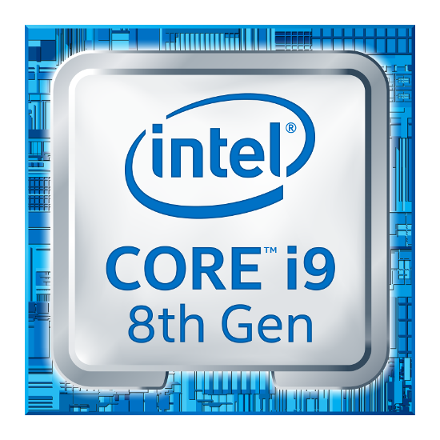

4.Generácia (Osobné počítače)
Charakteristika počítačov štvrtej generácie: veľmi vysoký stupeň integrácie obvodov (VLSI) umožnil riadenie počítača jednou súčiastkou: mikroprocesorom.

- miniaturizácia integrovaných obvodov
- miniaturizácia hardvéru
- mikroprocesor
- operačná pamäť
- dátová komunikácia
- sieťové prepojenie
- prenosné dátové médiá
- integrované veľkokapacitné úložiská
- používateľsky inštalovateľný operačný systém
- používateľsky inštalovateľný aplikačný softvér
- počítače pre osobné použitie